刚刚，北京时间今天上午，第77届美国电影电视金球奖颁奖礼在洛杉矶举行。
63岁的汤姆.汉克斯获终身成就奖。
汤姆.汉克斯领奖时一度哽咽，场面非常感人。
而其最新作品《邻里美好的一天》更是温暖了无数人。
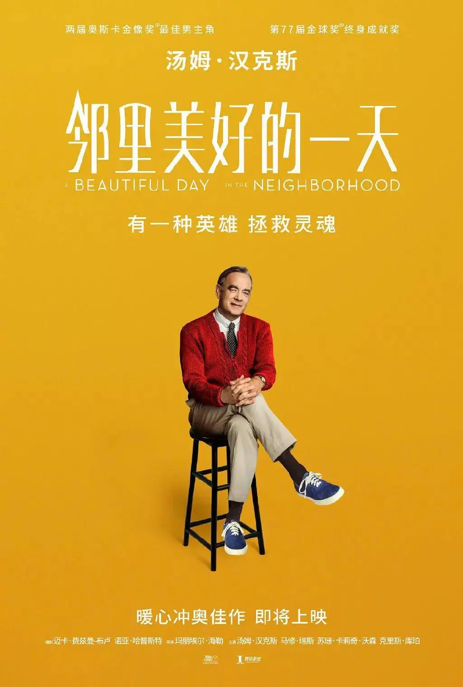
那个曾经演绎阿甘的男人，在花甲之年又一次挑战美国精神的另一个代表：弗雷德.罗杰斯。
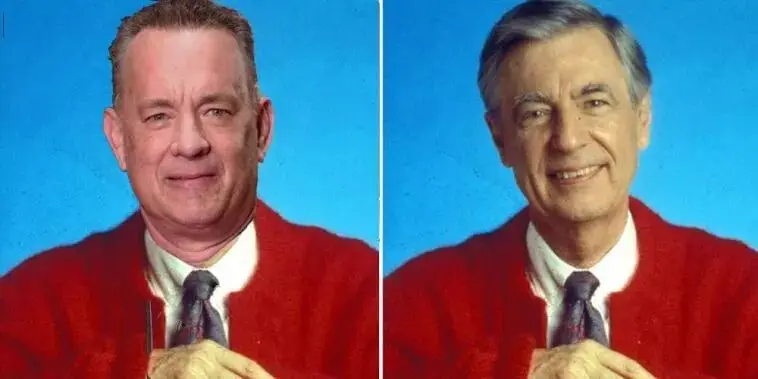
罗杰斯先生是谁？
也许我们中国人会很陌生，但在美国，如果你提到他的名字，会让很多人泪目。

因为罗杰斯是无数美国人童年里的安慰和精神父亲。
不知道有多少孩子在面对自己父母离异、在面对环境污染、在面对911和死亡而茫然无措的时候，是罗杰斯让孩子们理解了死亡和痛苦。

当孩子们因为家庭破碎而蜷缩在角落的时候，是罗杰斯温柔地告诉他们：你很特别，我喜欢的就是你。

孩子以及孩子的心灵成为了罗杰斯毕生关爱的对象，因为他自己很清楚，一个被恐惧、冷漠所吞噬的幼小心灵是多么的痛苦。
罗杰斯自己小时候就曾因为肥胖而被同学嘲笑，这让他很长时间走不出自卑的阴影，他只能通过钢琴来舒缓自己的心情，要么用自己的小手同时按下低音键来发泄愤怒，要么通过哀伤的小曲来表达自己的孤独。
所幸，祖父的一句话治愈了罗杰斯，祖父告诉他：我就喜欢你现在这个样子。
是的，不需要伪装，不需要故作镇静，祖父喜欢的就是那个不完美的孩子。
祖父的爱让他明白，一个孩子除非能够接受自己本来的样子，否则他很难真正的长大。
因为这些童年经历，罗杰斯大学学的是音乐，毕业后成为了一名儿童节目制片人。
在这个过程中，他发现了自己对于儿童教育有着长足的兴趣，并且他厌倦透了美国儿童节目里普遍的恶趣味、低俗和暴力。
所以他在工作期间，去匹兹堡神学院兼修神学和儿童心理学，并且之后成为了一名长老会牧师。
但是罗杰斯在儿童教育上的恩赐那样耀眼，教会鼓励他继续坚持儿童教育事业。
于是，1968年，40岁的罗杰斯创办了影响深远的《罗杰斯先生的左邻右舍》。
节目名字的灵感来自圣经中的一处经文：你要尽心、尽性、尽力、尽意爱主你的神；又要爱邻舍如同自己。
从此，心灵破碎的孩子、信仰、爱成为了罗杰斯一生的动力。

每天早上五点半起床后，罗杰斯做的第一件事为自己的家人、朋友以及写信向他表达苦恼的小朋友祷告。
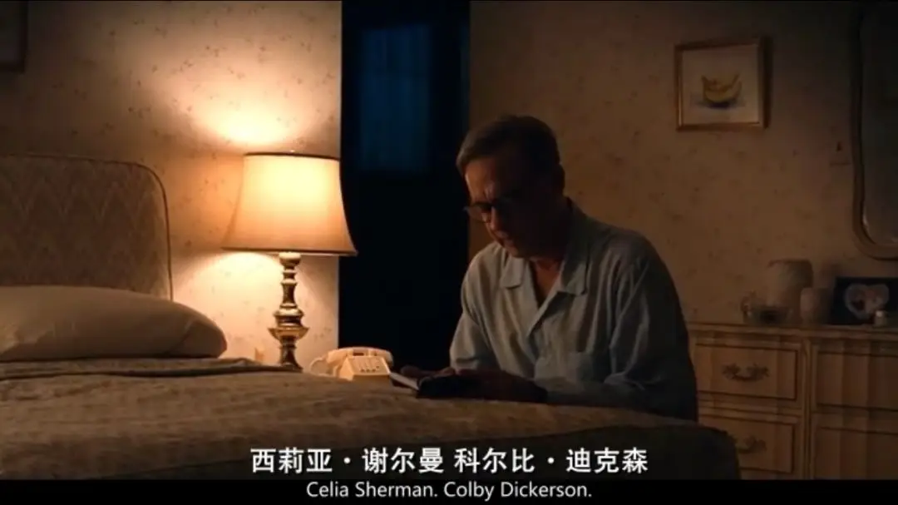
录制节目时，当罗杰斯看到摄影机时，他就想到那是一个人，那个人和他之间的区域是很神圣的地方，那里将会发生很多事。
所以，他总是很认真耐心地聆听小朋友的声音，总是很温柔地和小朋友谈论人际关系、谈父母、谈如何上厕所、如何制作蜡笔。

他每天都会坚持游泳，为的是将自己的体重保持在143斤。
因为143对于他有着特殊的意义，它代表I LOVE YOU。
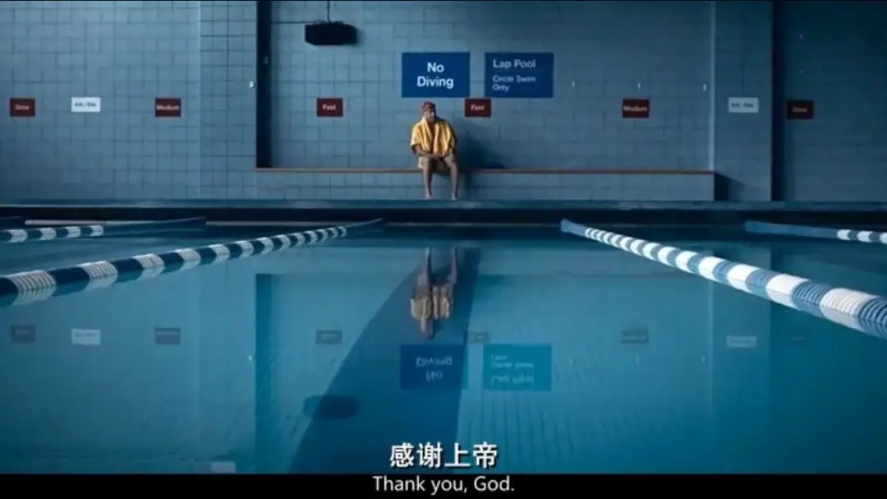
就这样，罗杰斯先生就像小王子一样，他的一言一行都触及到了很多人心灵的深处。
他的节目持续了三十年，他在美国的影响难以估量。

2003年，罗杰斯安息主怀。
美国参议院一致通过决议，以纪念罗杰斯的巨大贡献：
“通过他的灵性和平静的特质，罗杰斯先生能够接触到我们国家的孩子，并鼓励他们每个人了解他们在社区和家庭中发挥的重要作用。
更重要的是他并没有回避处理死亡和离婚等难题，而是鼓励孩子以健康、建设性的方式表达自己的情感，往往为生活的艰辛提供一个简单的答案” 。

之后，曾被罗杰斯温暖的人总是以各样的方式纪念着他。
一个小行星以他的名字命名。
2018年，奥斯卡得主摩根·内维尔拍摄了罗杰斯的传记纪录片《与我为邻》。
这部纪录片大获好评，很多人在电影院里看的泪流满面。
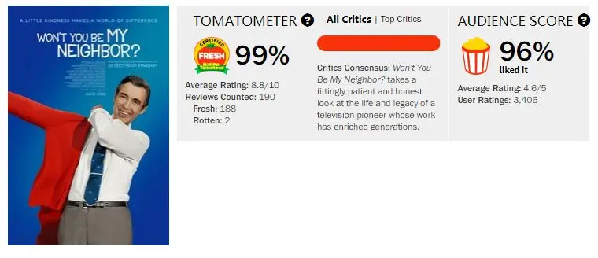
2019年，女导演玛丽埃尔·海勒与汤姆.汉克斯合作拍摄罗杰斯传记电影《邻里美好的一天》。

玛丽埃尔·海勒表示“作为一个母亲，我深受弗雷德·罗杰斯的教育启发，作为一个人，我对他毕生的工作充满敬畏”
海勒说道，“我迫不及待地想把他的故事带给公众，并成为这样一个深思熟虑、智慧的群体中的一个，这些人都聚集在一起制作这部电影，这让我觉得这是对我们支离破碎的文化的一剂良药。”
这部作品受到了广泛的赞誉，《时代周刊》将其评为“2019年十佳影片”。
这部作品我等了一年多，根据最新消息这部电影会引入大陆，到时我们将可以在大屏幕上一起来看这个感人的故事。
这部作品并没有通过第一视角表现罗杰斯，而是通过第三视角来讲述故事的。
新闻记者罗伊德是个愤青，他习惯通过报道和文字来针砭时弊、揭露社会的阴暗面。
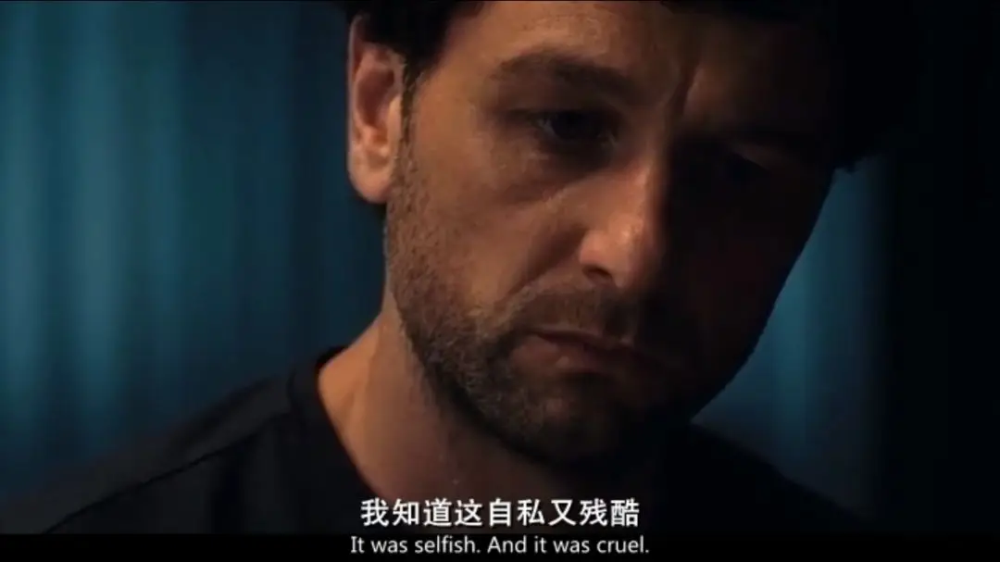
罗伊德嫉恶如仇的性格一方面是来自于他的正义感。
另一方面，更多来自于他童年的阴影。
小时候，他的父亲出轨、抛妻弃子，并最终导致他的母亲忧愤离世。
从此，他的父亲成为他最大的仇人，也因为如此，他本能地认为这个社会充满了黑暗，他的笔对社会的丑陋也不会留一点情面。
直到他接到一个任务，那就是采访罗杰斯先生，一个圣徒般存在的公众人物。
罗伊德的妻子得知丈夫要采访罗杰斯时，她不禁说“请不要毁了我的童年”。
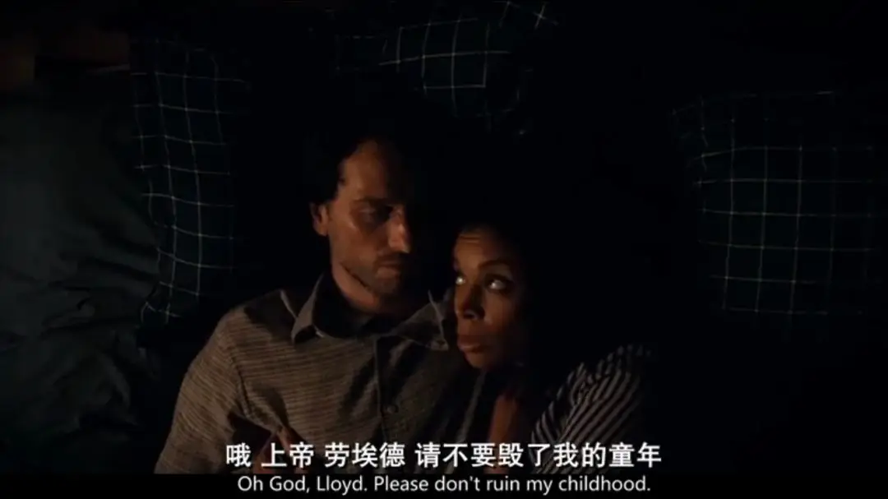
毕竟，虚有其表的人太多，她害怕罗杰斯也是其中一员。
可这次采访却彻底改变了罗伊德和他的家庭......
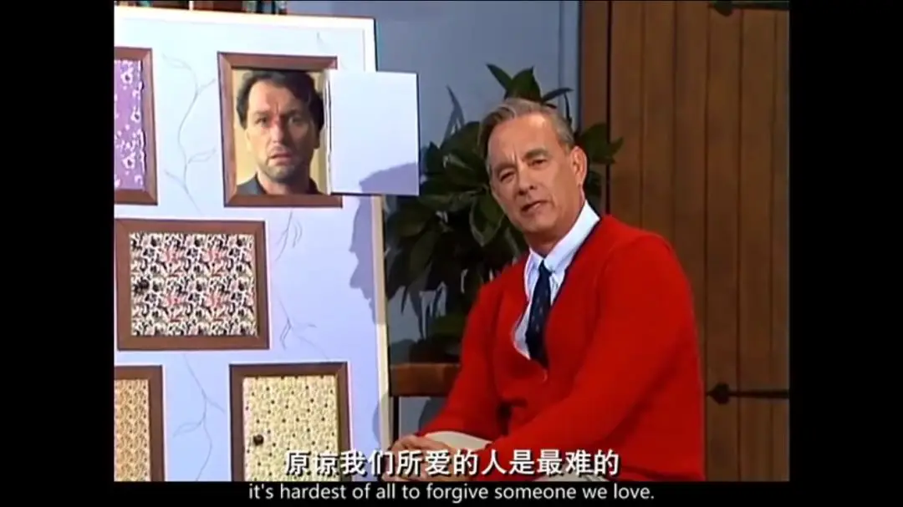
因此，这是一个关于救赎的故事。
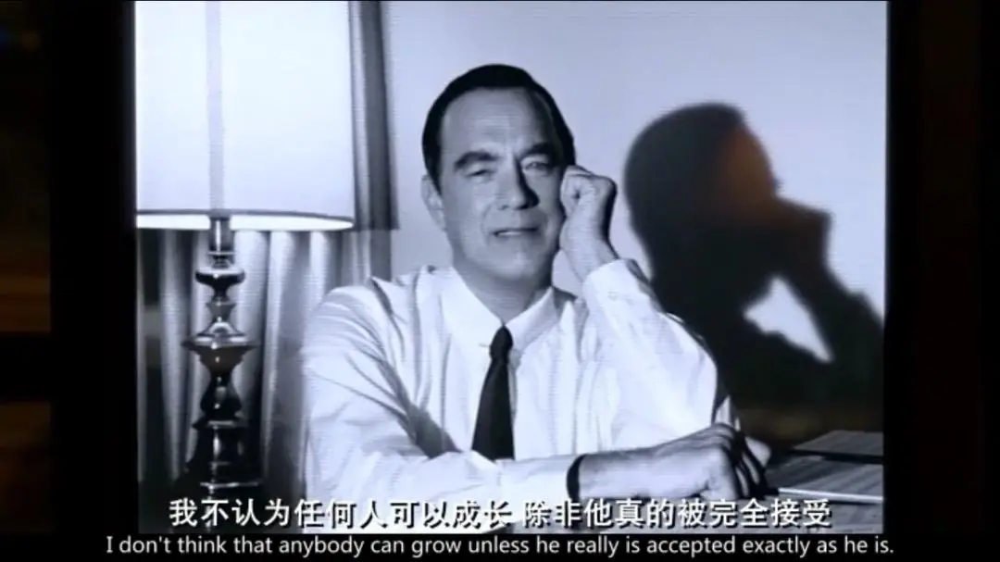
关于剧情即使我不透露，大家也能大致猜到是怎么回事。
对于习惯于猎奇的观众来说，这部电影是“陈旧、平淡”的，是没有棱角的。
甚至，我敢说将来会让很多大陆影迷吐槽。
因为我们不习惯这样的救赎电影，甚至会觉得反胃。
这种感觉，就像是和基督徒交流一样，会觉得很不自在。
电影中的记者初见罗杰斯也是这样的感觉。
所以，在电影大面积上映之前，我来谈两点感受。
第一，我觉得这种观影产生的反感是非常正常的。
对于习惯在泥巴中摸爬滚打的人来说，忽然有个人身上一边挂着泥巴，一边告诉你要洗涤自己。
这会让我们觉得莫名其妙，甚至觉得可笑。
因为，这个世界上没有完人。
既然没有完人，谁又有资格和能力去救赎另一个人。
所以，对于无神论者或者经历过心灵破碎的人来说，大家更习惯于丛林法则，更习惯于以牙还牙和快意恩仇。
但是，没有完人虽是事实，泥巴让我们肮脏、患病和痛苦也是事实。
既然这个世界一直有问题，不管我们愿不愿意承认，我们每个人都需要救赎！
但是愿意被救赎其实是一个很难的事情，因为我们太骄傲了。
我们骄傲到宁愿自己活在苦痛中，也绝不相信自己需要救赎。
所以，我谈这一点是希望我们可以放下偏见，能像小孩子一样来看这部作品。
因为有些东西，大人很难看懂和领受，反而小孩子能看懂。
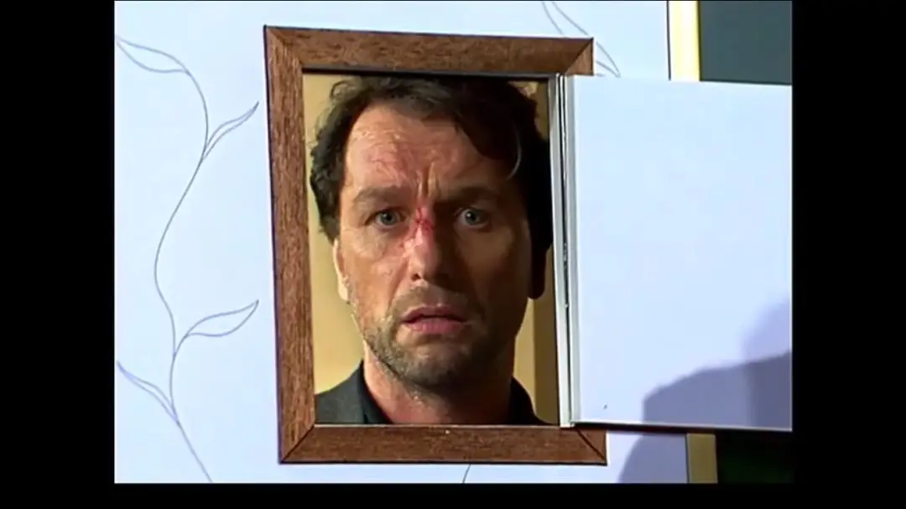
第二，我想谈的是什么才是真正的力量。
看这部电影时，我就想起《皮娜》中的一句话：柔软为力量之源。
电影中记者的愤怒是很有力度的，这种义怒让他敢于揭露很多黑暗。
但是他的心是非常刚硬的，他很讨厌自己的父亲，曾无数次发誓不要成为父亲那个样子。
但事实上，他正在一步一步地走向父亲的老路，不愿意在孩子身上花太多的精力。
这就是人类很普遍的一个悲剧：强制性重复。
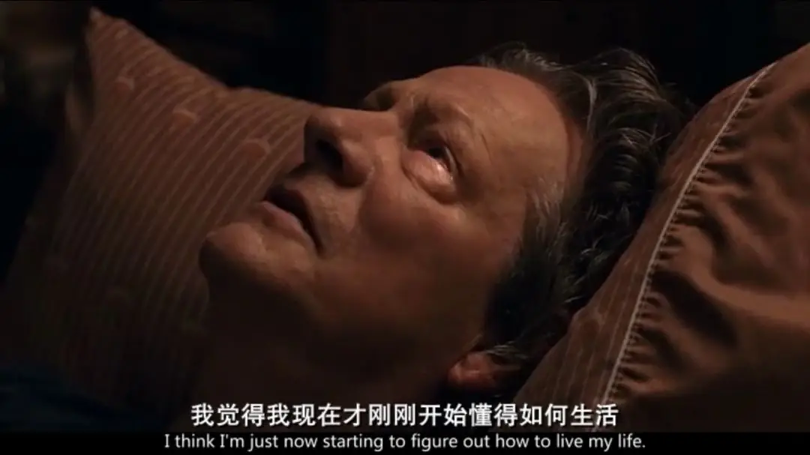
也就是说，如果一个人因为原生家庭产生阴影，他虽然对原生家庭的毛病深恶痛绝，但他大概率还会重复原生家庭的悲剧。
比如说，自己曾目睹父亲曾对母亲家暴，这个孩子长大后极有可能会对自己的妻子家暴。
要如何才能跳离这种重复性悲剧的魔咒。
电影给出的答案是原谅，是宽恕。
是低下头承认自己和父母一样是一个无法自控的炸弹。
而原谅会让我们从原生家庭的捆绑中得到释放。
这就是柔软，就像水一样细细流淌，但却能穿透最坚硬的“石头”。
这种柔软不是根植于自己的道德有多么高人一等，而是来自于被救赎，来自于对自己的不信任和对救赎者的强烈信心。
罗杰斯，就是这样一个柔软的人。
电影中有一幕我非常感动，他来到记者父亲的身边，轻轻地和那个生命垂危的老者说了几句话。
之后记者很好奇，问他和自己父亲说了什么。
罗杰斯告诉他“我请他帮我一个忙，帮我向上帝祈祷......我想任何一个经历他现在经历的事情的人，一定非常接近上帝”。
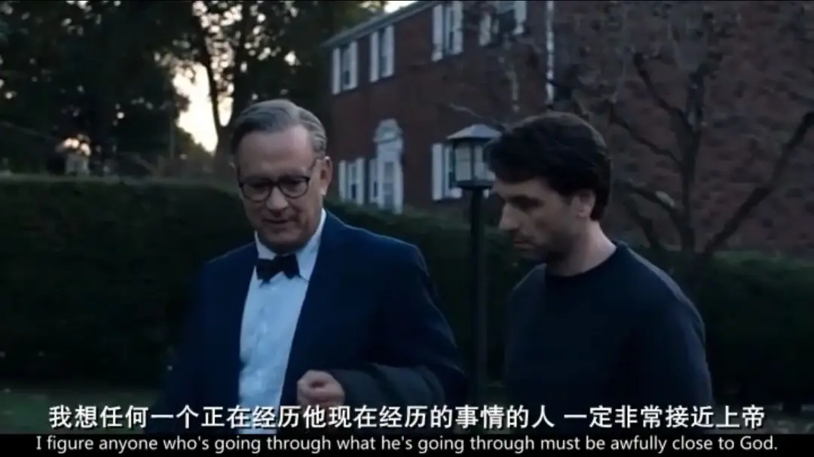
因为，罗杰斯明白，上帝来是要拯救罪人。
而那个生命垂危的老者，那个曾经犯过大错并一辈子活在愧疚的人就是一个回头的浪子。
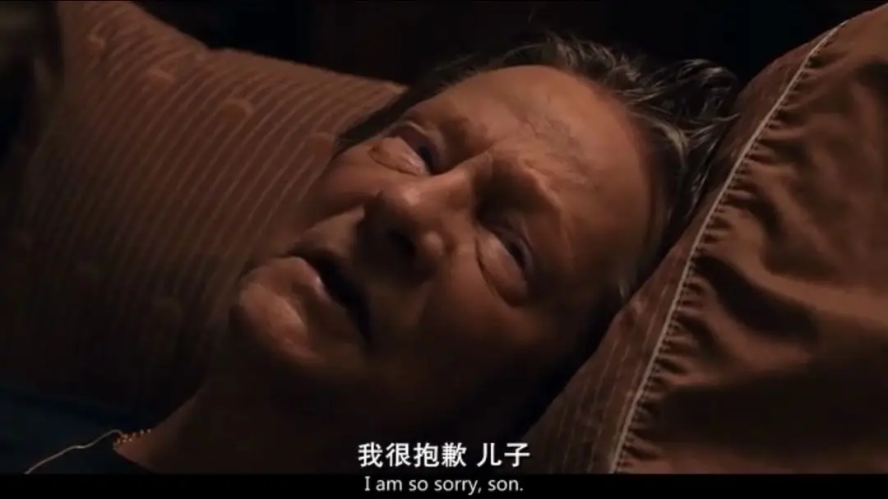
这就是罗杰斯的伟大，他的伟大就是认为自己并不伟大，只是一个卑微的罪人。
关于这一点，很可惜电影没有过多去刻画罗杰斯内心的软弱和挣扎，而是选择了留白。
尽管如此，这部作品依旧值得我们期待，因为中国太需要“罗杰斯”这样懂孩子、爱孩子并愿意在暗处为孩子祈祷的人。
-END-
相关推荐
▼
（点击图片即可获取全文）

这里没有挑逗你眼目情欲的小鲜肉
也没有挑动你肉体情欲的段子
更没有膨胀你今生骄傲的鸡血
我们只在乎那些最质朴真诚的作品
在那里我们才能恢复真正的想象力
我们也坚信这才是我们真正需要的

ID:Six_hundred_hits
长按二维码，一键关注
【六百击】
电影评论
尽情分享朋友圈

微信二维码打赏通道